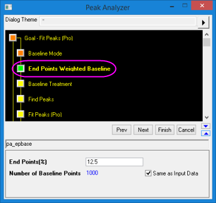

Peak Analyzer, End Points Weighted Baseline Page
PeakAnalyzer-WeightBaseline
This page is added to the Peak Analyzer when End Points Weighted is selected for Baseline Mode. Use it to specify settings for creating a smoothed curve as a baseline using data points from two ends of the input data.
-
- 
- Menu Command: Analysis: Peaks and Baseline: Peak Analyzer: Open Dialog
- Window Types: Workbook, Graph
Dialog Theme
Dialog Box Controls
| End Points(%) |
Specify the percentage of end points to create baseline. |
| Number of Baseline Points |
Specify the number of points for creating baseline. If the Same as Input Data check-box is selected, the number of baseline points will be the number of points in the input data. |